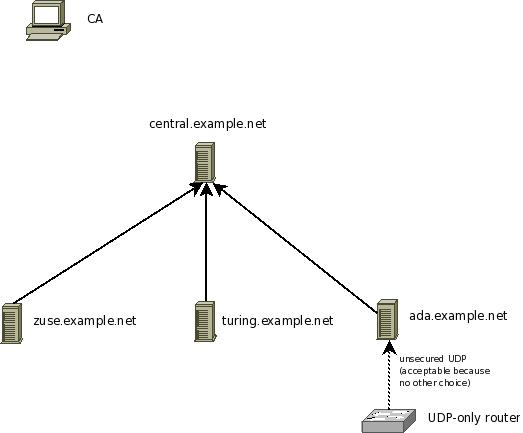

Setting up the Central Server¶
In this step, we configure the central server. We assume it accepts messages only via TLS protected plain tcp based syslog from those peers that are explicitely permitted to send to it. The picture below show our configuration. This step configures the server central.example.net.

Important: Keep in mind that the order of configuration directives is very important in rsyslog. As such, the samples given below do only work if the given order is preserved. Re-ordering the directives can break configurations and has broken them in practice. If you intend to re-order them, please be sure that you fully understand how the configuration language works and, most importantly, which statements form a block together. Please also note that we understand the the current configuration file format is ugly. However, there has been more important work in the way of enhancing it. If you would like to contribute some time to improve the config file language, please let us know. Any help is appreciated (be it doc or coding work!).
Steps to do:
- make sure you have a functional CA (Setting up the CA)
- generate a machine certificate for central.example.net (follow instructions in Generating Machine Certificates)
- make sure you copy over ca.pem, machine-key.pem ad machine-cert.pem to the central server. Ensure that no user except root can access them (even read permissions are really bad).
- configure the server so that it accepts messages from all machines in the example.net domain that have certificates from your CA. Alternatively, you may also precisely define from which machine names messages are accepted. See sample rsyslog.conf below.
In this setup, we use wildcards to ease adding new systems. We permit the server to accept messages from systems whos names match *.example.net.
$InputTCPServerStreamDriverPermittedPeer *.example.net
This will match zuse.example.net and turing.example.net, but NOT pascal.otherdepartment.example.net. If the later would be desired, you can (and need) to include additional permitted peer config statments:
$InputTCPServerStreamDriverPermittedPeer *.example.net
$InputTCPServerStreamDriverPermittedPeer *.otherdepartment.example.net
$InputTCPServerStreamDriverPermittedPeer *.example.com
As can be seen with example.com, the different permitted peers need NOT to be in a single domain tree. Also, individual machines can be configured. For example, if only zuse, turing and ada should be able to talk to the server, you can achive this by:
$InputTCPServerStreamDriverPermittedPeer zuse.example.net
$InputTCPServerStreamDriverPermittedPeer turing.example.net
$InputTCPServerStreamDriverPermittedPeer ada.example.net
As an extension to the (upcoming) IETF syslog/tls standard, you can specify some text together with a domain component wildcard. So “*server.example.net”, “server*.example.net” are valid permitted peers. However “server*Fix.example.net” is NOT a valid wildcard. The IETF standard permits no text along the wildcards.
The reason we use wildcards in the default setup is that it makes it easy to add systems without the need to change the central server’s configuration. It is important to understand that the central server will accept names only (no exception) if the client certificate was signed by the CA we set up. So if someone tries to create a malicious certificate with a name “zuse.example.net”, the server will not accept it. So a wildcard is safe as long as you ensure CA security is not breached. Actually, you authorize a client by issuing the certificate to it.
At this point, please be reminded once again that your security needs may be quite different from what we assume in this tutorial. Evaluate your options based on your security needs.
Sample syslog.conf¶
Keep in mind that this rsyslog.conf accepts messages via TCP, only. The only other source accepted is messages from the server itself.
$ModLoad imuxsock # local messages
$ModLoad imtcp # TCP listener
# make gtls driver the default
$DefaultNetstreamDriver gtls
# certificate files
$DefaultNetstreamDriverCAFile /rsyslog/protected/ca.pem
$DefaultNetstreamDriverCertFile /rsyslog/protected/machine-cert.pem
$DefaultNetstreamDriverKeyFile /rsyslog/protected/machine-key.pem
$InputTCPServerStreamDriverAuthMode x509/name
$InputTCPServerStreamDriverPermittedPeer *.example.net
$InputTCPServerStreamDriverMode 1 # run driver in TLS-only mode
$InputTCPServerRun 10514 # start up listener at port 10514
Be sure to safeguard at least the private key (machine-key.pem)! If some third party obtains it, you security is broken!